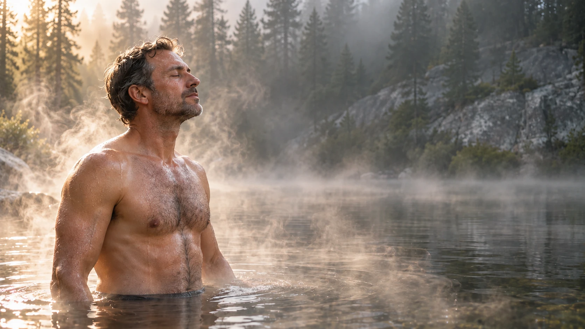
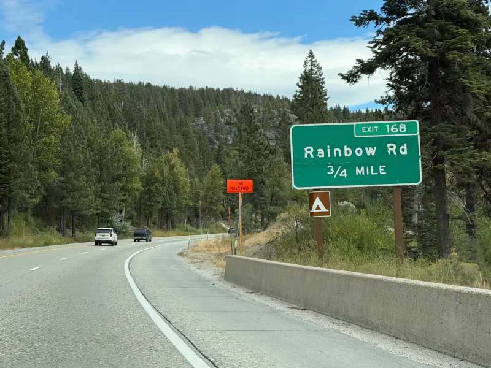
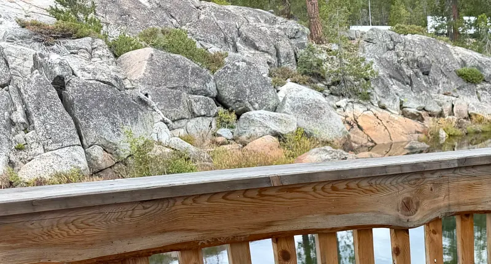

Баня
- Топится дровами: растопите печь, и пока разбираете вещи, камни прогреются
- Полок в два яруса
- Ваша весь день, а не полтора часа по записи с чужими людьми
- Вместо купели — река под террасой

Округ Плейсер, Калифорния · I-80, съезд 168
Всё место для компании до 10 человек: $500 за день, $1 000 за сутки. Полтора часа от Сакраменто.
Зимой машину оставляете у дороги возле ворот, последний километр — на снегоступах. Снег никто не чистит, и кроме вас здесь никого: дрова сложены, баню топите сами.
Сьерра-Невада, между посёлками Cisco Grove и Kingvale, примерно в десяти милях ниже перевала Доннер.

Пара минут от I-80, дальше свои ворота и асфальт вниз к дому. Время в пути указано для сухой дороги без пробок.
Бронируете вы дом и баню. Лес и река вокруг тоже ваши: напишите, что задумали, в комментарии к брони, и мы подтвердим, что получится.

До 15 человек. Цена за всё место, а не за каждого: до 10 человек — $500 за день и $1 000 за сутки; от 11 до 15 — $750 и $1 500. В доме 15 спальных мест, на ярусных кроватях и в мансарде.
Еду и напитки на всех: ближайший большой продуктовый магазин в Траки, в двадцати минутах. В доме кухня с газовой плитой, холодильником и микроволновкой. Здесь водятся медведи, поэтому еда и всё, что пахнет, хранится в доме и никогда не остаётся на ночь в машине. Постельное бельё и полотенца берите свои; дрова для бани и печи на месте. Есть ли питьевая вода, уточните у нас.
Летом и осенью нет: от ворот до дома дорога асфальтированная. Зимой снег глубокий и его никто не чистит: машину оставляете у дороги возле ворот, последний километр идёте на снегоступах. На I-80 требование цепей начинается у Kingvale, в нескольких милях восточнее.
Не рассчитывайте ни на то, ни на другое. Связь рядом ловит пятнами; говорят, лучше всех работает AT&T. Прежде чем ехать, оставьте кому-нибудь адрес и свои планы.
Летом заводь под террасой тихая, но это горная река: ледяная талая вода и течение под спокойной гладью. Купаться обычно можно с середины июля; весной, в половодье с мая до начала июля, река опасна и в ней никто не купается. Зимой в реке не плавают, а окунаются: зашёл — и сразу обратно в парилку, и только если река в этот день спокойная. Детям — спасательные жилеты.
Да, вне пожароопасного сезона. С конца июня по октябрь открытые костры запрещены и здесь, и по всей Сьерре: тогда ваш огонь — печь в бане, в гостиной есть дровяная печь, на террасе грили.
Съезд в паре минут, так что у ворот слышно. Сколько доносится до дома и до воды, зависит от ветра и реки.
Выберите даты в форме ниже и отправьте её: мы держим даты 24 часа и пишем вам, куда перевести залог. Даты ваши после залога, равного цене аренды; саму аренду оплачиваете за три дня до приезда. И то, и другое — переводом через Zelle. Можно и просто написать нам в Messenger.
Вы сами. Здесь никто не живёт, а хозяева слишком далеко, чтобы приехать и убрать. Вы получаете чистые дом и баню, дрова сложены; баню топите сами, оставляете всё таким же чистым, мусор увозите с собой, закрываете и оставляете ключ, где скажем. После этого залог возвращается целиком; уборка или поломка удерживаются из него.
Бронь больше чем за 14 дней до даты: 7 дней, чтобы передумать и вернуть залог. Потом, или если бронируете за 14 дней и ближе, залог не возвращается.
Напишите странице «Бизнес-клуб EXIT 168» в Messenger: даты, вопросы, что угодно. Отвечаем и там, писать можно по‑русски.
Написать в Messenger